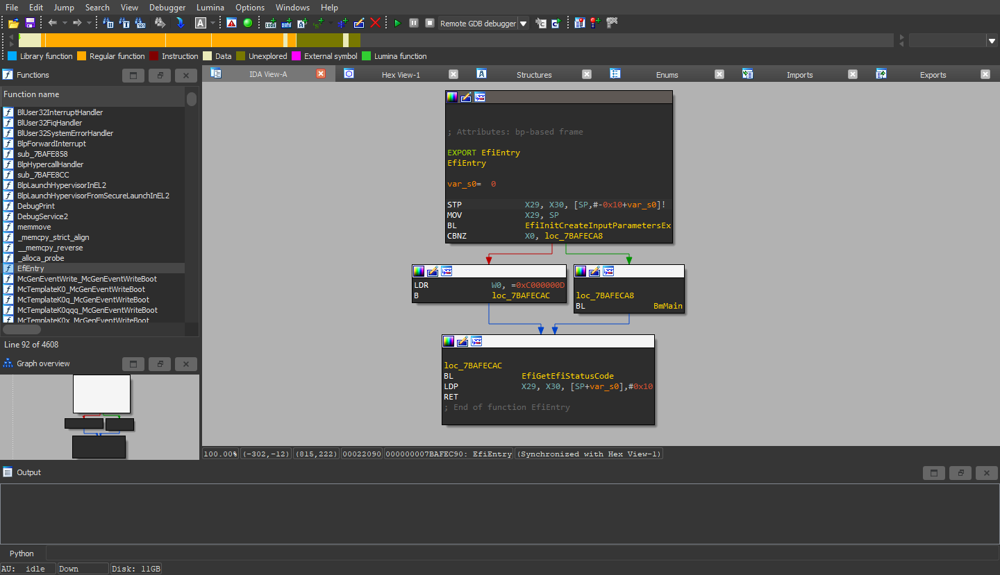
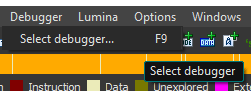
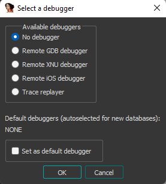
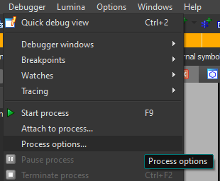

Feel free to skip this section if you have already know. Thank you :)
Windows, like all other OSes, need to be loaded by a bootloader. On x86 system, if your computer use BIOS, it will look for the MBR on your disk, load it and then run it, then the MBR performs it tasks to load the OS. If you have UEFI, it will look for EFI file in the folder EFI\BOOT\ in your EFI partition. On Windows x86(_64), this file is called bootx64.efi.
On ARM64 (aka aarch64) platform, this file is called bootaa64.efi. It does exactly the same work: load and run Windows, but on ARM64 platform.
TL;DR: bootaa64.efi is Windows EFI Boot Loader for ARM64 platform.
I'm trying to run Windows ARM64 on my phone using KVM. The phone has Linux kernel version 3.18.91, and the KVM module on that kernel lacks (most of) the things Windows ARM64 requires to works. It just hangs when I run it on KVM (hang with blackscreen and absolutely no error message. That's why I have to find where it stucks by debugging.
Each executable file on Windows is links with the corresponding .pdb file (Program Debug Database) on the Windows Debug Symbol Server. It provides debug symbols (eg function names, variable names, class names, structures,...) to make it easier to debug and read the program's disassemblied code.
GDB cannot load .pdb files, which makes it hard to read and debug assembly instructions with naked eyes (really awful if you can imagine that)
WinDBG is used to debug the NT kernel and things after the kernel has been started up, and we need to enable debug in the bootloader. But we are debugging the bootloader, it doesn't work, how can we boot to it to enable it ? :D WinDBG can also be used for debugging EFI, but it needs to be used with Intel UDK (UEFI Development Kit). And guess what, that thing only works on x86(_64) platform :)
Using IDA with GDB backend might be the best option I can think of. IDA loads .pdb files, make graphs,... and connect to GDB to debug. In fact, you can also use things like Ghidra or radare, but I haven't tried it yet.
QEMU with IDA is just enough for the tools. I run QEMU on my phone, so I can try both TCG (Tiny Code Generator, pure software emulation) and KVM (hardware virtualization)
You should have the EDK2 debug image, which provides you verbose logs. You can compile it by your own, or you can get it from precompiled site here. REMEMBER TO GET THE AARCH64 DEBUG VERSION!!!
If you download the precompiled firmware from the above site, or you compile it by your own, you might need to resize the firmware to exact 64MB to fit QEMU's flash size, or it will complain. To make a file exactly 64MB, you can try:
dd if=/dev/zero bs=1M count=64 of=output.img
dd if=input.img bs=1M of=output.img conv=notrunc
with input.img is the input file and output.img is the output file with the size of 64MB.
Or, you can download my resized image built on my own here :)
And of course, you need your bootaa64.efi (or any other EFI files you want to debug). Put it in a FAT32 partition to be able to load it from EDK2.
TCG is fully software emulation. Breakpoints should work on it normally
But KVM is a different story. Since it uses hardware virtualization, so to use breakpoint, we need to set hardware breakpoint. Support for hardware breakpoint on KVM on ARM64 is initialized here (maybe?) If your kernel doesn't support guest debugging on KVM, breakpoints might not work and QEMU will complain about guest debug not supported on this kernel (like my kernel :D). In that case, single stepping and breakpoints might not work until you patch the kernel. The alternative (but quick and dirty way) is to catch where the code stuck using debugger, then patch the binary, then copy it again to the drive, then run it again. That's not efficient but at least it works :)
bootaa64.efi to IDA64Remember to allow IDA to download pdb file from the debug server. After that, you will get this:
This file will contain some MRS and MSR instructions. IDA will not decode it for you to a human-readable form:
You can use the script highlight_arm_system_insn.py from this repo. After that, it will be much better:
Now it's good to go!
You need to install QEMU in your system. How you do this is your own business, there are plenty of instructions from the Internet. If you just want to use TCG (pure emulation), then you can run QEMU anywhere you want, not just arm64 hardware with KVM support.
Here is the command line I used for QEMU:
The TCG (pure emulation) version:
# TCG version (pure emulation)
qemu-system-aarch64 -M virt,virtualization=on -cpu cortex-a53 -smp 1 -m 1024 -pflash flash0.img -pflash flash1.img -device qemu-xhci -device usb-mouse -device usb-tablet -device usb-kbd -device ramfb -drive if=none,format=vpc,id=iso,media=disk,file=/storage/7AB4-F25D/22000.1_PROFESSIONAL_ARM64_EN-US.vhd -device usb-storage,drive=iso -s -S -vnc :1 -serial stdio
# KVM version (hardware virtualization)
qemu-system-aarch64 -M virt -cpu cortex-a53 --enable-kvm -smp 2 -m 1024 -pflash flash0.img -pflash flash1.img -device qemu-xhci -device usb-mouse -device usb-tablet -device usb-kbd -device ramfb -drive if=none,format=vpc,id=iso,media=disk,file=/storage/7AB4-F25D/22000.1_PROFESSIONAL_ARM64_EN-US.vhd -device usb-storage,drive=iso -s -S -vnc :1 -serial stdio
Some note about the command line:
- flash0.img and flash1.img are QEMU_EFI.fd and QEMU_VARS.fd but resized to 64MB. They are from my Google Drive folder above.
- For the easy of modifcation, I copied the Windows ARM64 ISO to a VHD using Rufus, then put it on a SD card and plug it into my phone. You can boot from other disk image, for example ISO, or even raw disk if you want to. Just remember to change the field format, media (disk for emulating hard disk and cdrom for emulating CD-ROM deivce) and file path.
QEMU will pause on run to wait for start signal from IDA (or GDB client). QEMU will output the serial log (which will contain the output of EDK2 log) to stdio (aka the terminal you are running the command from), and open port 5901 for guest VNC framebuffer (feel free to change if you have that port already used), and port 1234 for GDB (also feel free to change, by remove -s option and add -gdb yourport, replace yourport with the port you would like to use)
Go to IDA, click the Debugger menu and click Select Debugger. Alternatively you can press F9
A menu will appear
Select Remote GDB debugger. Then go to Debugger -> Process options...
Here, set the port to 1234 and the IP to the IP of the machine that is used to run QEMU
To be continued...